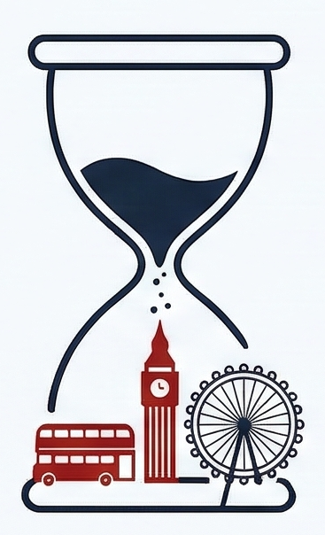

Tiempo en Londres
Pronóstico para el viaje (3–6 abr) o próximos días si aún no está disponible.
Cargando pronóstico…
Datos de Open-Meteo (sin API key). El pronóstico a varias semanas es orientativo; revisa de nuevo cerca de la fecha.

guía en construcción
Alejandro & Ivonne están a punto de despegar. Contando los segundos para aterrizar en Londres.
Desbloquearemos tu guía cuando llegue el momento del despegue.
London Escape
03 – 06 Abril 2026
3 noches · 4 días · Londres
Pronóstico para el viaje (3–6 abr) o próximos días si aún no está disponible.
Cargando pronóstico…
Datos de Open-Meteo (sin API key). El pronóstico a varias semanas es orientativo; revisa de nuevo cerca de la fecha.
Boarding pass minimal · Ida y vuelta
dirección
126 Southampton Row, London WC1B 5AD (Bloomsbury).
check-in
Viernes 3 de abril (desde 15:00)
check-out
Lunes 6 de abril (hasta 11:00)
habitación
Doble Estándar (3 noches).
Horarios, reservas, direcciones y webs según tu CSV de abril 2026.
03/04 · Viernes
Llegada, traslado y primer día en Londres
Vuelo Ida BCN→LTN
Vuelo W9 5362. 1 mochila 40×30×20 c/u
Luton → Londres Centro
Thameslink a St Pancras o bus a Victoria
Free Tour Westminster
Punto de encuentro: Trafalgar Square
Covent Garden
Paseo por mercado y artistas callejeros
Soho & Piccadilly Circus
Cena en Orient London + paseo luces neón
04/04 · Sábado
Westminster, mercado y noche especial
Westminster & Southbank
Big Ben, London Eye, paseo río Támesis
Tower Bridge y Torre de Londres
Cruzar puente y fotos exteriores
Siesta en hotel
Descanso en Thistle Bloomsbury Park
Cena romántica
Duck & Waffle o The Churchill Arms (CSV: Duck & Waffle)
05/04 · Domingo
Brick Lane, museo, parque y Sky Garden
Brick Lane Market
Mercado dominical + Nude Coffee Roasters
Sunday Roast
Pub clásico: The Lamb o The Princess Louise (CSV: The Princess Louise)
British Museum
Entrada gratuita, al lado del hotel
Hyde Park
Paseo relajado o compras última hora
Sky Garden (cóctel despedida)
Reserva obligatoria gratuita
06/04 · Lunes
Desayuno, tren a Luton y vuelo de vuelta
Desayuno inglés
Full English Breakfast en 49 Café
Vuelo vuelta LTN→BCN
Vuelo FR 7807. Llegada T2 Barcelona
Datos sincronizados con
Itinerario_Londres_Abril2026.csv
· Actualiza el CSV y vuelve a generar esta sección si cambias el planning.
Referencias rápidas para orientarse sin perder el ritmo del viaje.
Mapas rápidos
Punto base & overview
Usa estos accesos como “anclas” en Google Maps:
Punto base para guardar como “Casa” o “Favorito”.
Centro clásico · Westminster / Soho
Referencia para días de “clásicos” (Día 2).
Ideal para marcar como zona de mercadillos y paseo junto al agua.
Notting Hill / Portobello Road
Zona bonita para fotos y paseo tranquilo en el Día 3.
Sugerencia: crea una lista propia en Google Maps (“London Escape”) y guarda todos estos puntos con iconos personalizados.
Zonas clave
Vibes por barrio
Recuerdos visuales


Puedes sustituir estos nombres de archivo por tus propias fotos en la carpeta images.
Todo es ajustable en función del clima, la energía y los antojos del momento. Esta guía está pensada para inspirar, no para imponer.